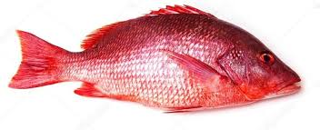
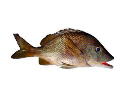
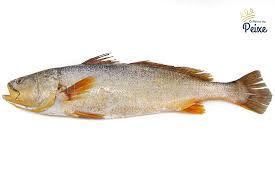

.png)
Ocean Help
Introdução
A Praia do Pântano do Sul é uma das praias mais famosas e visitadas da ilha de Florianópolis. Localizada na região sul da ilha, a praia é cercada por morros e tem uma atmosfera rústica e tranquila. O acesso à praia é fácil, podendo ser feito de carro ou ônibus. A Praia do Pântano do Sul é ideal para quem busca um ambiente mais calmo e sossegado. A praia é conhecida por suas águas cristalinas e pela faixa de areia extensa, que permite um banho de sol tranquilo e confortável. Além disso, a praia é bastante popular entre os surfistas, que podem aproveitar as ondas fortes e desafiadoras. A região também é famosa pela gastronomia. Na orla da praia, é possível encontrar diversos restaurantes que servem pratos típicos da culinária açoriana, como a tainha frita por exemplo. A região também serve como ponto de partida para trilhas e passeios ecológicos, incluindo o famoso caminho para a Praia da Lagoinha do Leste, conhecida por sua beleza selvagem e isolamento. Combinando beleza natural, tradição e boa culinária, o Pântano do Sul oferece uma experiência única e autêntica para os visitantes de Florianópolis.
Especies
Peixe-vermelho
https://www.oceaninspiration.net/peixe-vermelho-cioba/
Priacanthus arenatos (conhecido também como peixe vermelho ou olho-do-cão), este é um tipo de peixe comumente encontrado em recifes de corais e fundos rochosos, fundos de areia e pedra são lugares mais comuns de serem encontrados estes peixes além de serem recomendadas baias de 10 a 200m de profundidade. Tem como principais características, ser um peixe de hábito noturno e são predadores, se alimentando de peixes pequenos, poliquetas e crustáceos.
Carapicus

https://paginasdabio.ufpr.br/carapicu/
Os Eucinostomus gula, popularmente chamados de carapicus como muitas espécies de peixes, possuem cromatóforos (células especializadas que permitem ajustar a sua coloração) , oque permite mudarem a intensidade de seus padrões de cores, os machos podem exibir cores vibrantes para atrair fêmes, podem alterar também sua coloração em resposta a ameaças ou para se misturar com o ambiente, fornecendo-lhes camuflagem contra predadores ou presas. Os carapicus são comumente encontrados nas águas costeiras do Oceano Atlântico ocidental, desde a Flórida até o Brasil, habitando águas rasas, incluindo estuários, baías e fundos arenosos ou lamacentos. Animais onívoros, eles se alimentam de pequenos invertebrados, plâncton e detritos;
Cocoroca
https://fishcode.com.br/products/cocoroca
Sem informações suficientes.
Papa-terra

https://www.borapescar.com/blogs/betara/
Menticirrhus americanos (conhecido também como Papa-Terra ou Betara), peixe comumente encontrado em canais formados nas costas marítimas, geralmente em locais mais fundos, por isso se encaixam como peixes demersais, porém possuem temporadas em que o Papa-Terra se encontra mais perto da beira do mar, geralmente acontecendo isto no verão. Carne muito saboroso de acordo com os amantes de peixes, tem como principal hábito ser um predador, se alimentando de vários tipos de alimentos como pequenos crustáceos, moluscos, camarões, pequenos peixes, entre outros;
Tainha

https://engeplus.com.br/noticia/economia/2016/epagri-pesquisa-criacao-de-tainhas-em-agua-doce
Mugilidae (conhecido também como tainha), peixe comumente encontrado em águas costeiras e estua-rinas, geralmente em locais rasos em cardumes perto das superfícies. Tem como principal característica ser um grande ativo comercial de várias regiões, como por exemplo Florianópolis, além de ter como ter comportamento migratório sempre se movendo para águas mais quentes durante o período do inverno e retornando ao seu local de reprodução no verão, configurando assim a famosa safra da tainha;
Cação

https://www.centralfishes.com.br/portfolio-view/peixe-cacao/
O peixe cação é um pequeno tubarão medindo 1,3 m de comprimento, O formato do corpo é alongado; o focinho pontudo; a nadadeira caudal apresenta o lobo superior maior que o inferior. A coloração é cinza claro ou cinza chumbo, clareando em direção ao ventre. Ele é encontrado em prateleiras continentais e insulares, principalmente em fundos de areia, conchas e corais. Vivípara (com uma placenta saco vitelino), com 3 a 6 jovens por ninhada. Utilizados salgados secos para consumo humano. Peixes pelágicos, que se movimentam constantemente ao longo das praias e parcéis. A captura é mais fácil durante o verão, quando se aproximam da costa para reproduzir. Sua alimentação é carnívora, que se alimentam de peixes, crustáceos, moluscos, aves e mamíferos marinhos.
Pescada-Amarela
https://oreinodopeixe.com.br/produto/pescada-amarela/
Cynoscion acoupa(conhecido também por pescada-amarela), peixe comumente encontrado em águas salobras dos estuários, costeira de águas rasas e em águas de encontro entre rios e mares. Tem como principais características, emitir sons pelos seus músculos, vivem em cardumes espécie muito cobiçada entre os apreciadores de peixes chegando a ser considerada um peixe nobre;
Robalo

https://www.ruraltectv.com.br/como-criar-robalo/
Centrpomus parallelus (conhecido também como robalo), peixe comumente encontrado em costas, porém para conseguir se alimentar o famoso robalo ocupa estuários e rios. Tem como principal hábito ser um peixe solitário além de ser um predador, que se alimenta principalmente de alimentos como crustáceos, moluscos, camarões e pequenos peixes;
Balneabilidade
O Pântano do Sul, localizado em Florianópolis, é dividido em um único trecho principal para avaliação da balneabilidade. Em 21/05/2024, este trecho apresentou uma concentração de E. coli de 10 nmp/100ml, o que o classifica como próprio para banho. A média geral de E. coli no Pântano do Sul foi de 10 nmp/100ml, indicando que o trecho avaliado está dentro dos padrões aceitáveis e é considerado próprio para banho, conforme os critérios de balneabilidade. Por ser um lugar mais tranquilo e afastado, contando com uma quantia grande de pescadores no local, e moradores que preservam a área o nível da água é excelente.